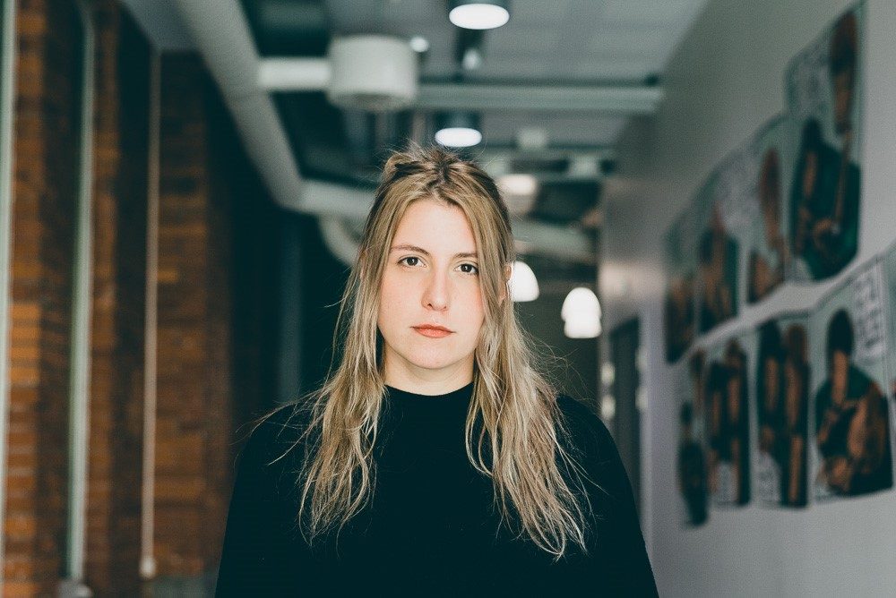

Simona Bisiani
Journalist, Data Analyst, Computational Social Scientist, and Founder  -> Check out my CV
{kind=link}
My journey starts at the moment in time when I made what I consider a courageous decision, and decided to take on the challenge to transition from journalist to data journalist. Already during my Bachelor in Journalism in Scotland, as I was trying to map inequality in Scotland using census data, I had started realising that nowadays news organizations can not just benefit, but are increasingly reliant, on the ability to work with data, in its extraction, handling, and presentation. The desire to harness the power of data and better grasp the responsibilities coming with it got me to enrol in an MSc in Computational Social Science at Linköping University, Sweden. At the time of writing, I have recently graduated, and am currently working at the European Journalism Centre, in their satellite website DataJournalism.com, where I write blogs about the field of data journalism and help the team with existing projects. In the past 2 years I have learned how to program in R, how to do sound statistical analysis including regression, I delved in the theory and practice of social network analysis, agent-based modelling, dimensionality reduction methods, and web scraping. I have worked with computational text analysis and machine learning in my thesis.
As a data journalist, my aims are generally three-fold. First, I want to avail of data acquiring and analysis techniques to generate journalistic pieces that strive for objectivity, through numbers, but also for truth, through informed and transparent methodological choices. Second, I am aware there are stories to be found in the vast online realm, ranging from using digital traces on social media networks to better understand human behaviour, to keeping governments accountable or guiding them, and finally to understanding the effects of architectural choices by big social media companies on individuals’ freedom and, more generally, society. Third, I want to use data tools to make better sense of the directions newsrooms should take in our digital age. Polarization, loss of trust in news organizations, the development of algorithmic journalism, content virality, abundance of information, and shrinking spans of collective attention, are some of the big challenges and opportunities journalism in the twenty-first century is facing, and the industry requires individuals capable of making sense of these complex phenomena. Journalism, data science, and data visualization will increasingly go hand in hand, and I intend to be at the intersection of these fields.
My Master thesis
-> Blank spots, critical information needs and local journalism fundingMy master thesis was always going to be something involving journalism. After coming across the notion of news deserts in the US, I became interested in seeing what we know about the phenomena in Sweden. Discovering in the literature the existence of a sort-of Swedish equivalent of news deserts (known as vita fläckar, which I translate to blank spots), I realised there was no large-scale effort to understand what type of news citizens of local-journalism fragile municipalities receive. I thus chose to run a study that used supervised classification of text to categorize 50000 articles for 6 fragile municipalities, between 2018 and 2020. I then extended the study by trying to causally understand whether public funding to those areas, introduced in Sweden in 2019, has so far benefitted such municipalities. For this purpose I used Difference-in-Differences, a popular method to compare outcomes across treated and untreated subjects of comparable nature. My thesis was an exciting project that got me the highest grade, and I thoroughly enjoyed the process. I also learned a great deal. I was new to programming when I got to my Master's degree, and my thesis required so much data handling, try out of different machine learning methods, and of different statistical study setups, that I got out of it feeling pretty comfortable coding. It was a game changer!
My thesis was purely conducted using R. It involved scraping, extensive data wrangling, and many, many fine-tuning attempts to better my classification model output. The code can be found here:
-> My GitHub thesis repositoryIf instead you fancy checking out my powerpoint of my thesis defence, it can provide a quick overview of the rationale for the study, the methods, and the results
-> See my powerpoint presentation here.My Essays and Projects
- Making the case for networked privacy as a new privacy paradigm in online social networks
- Leveraging Peer to Peer Influence: Measuring diffusion of online news media publications
- Ethnic residential segregation in Stockholm before, during, and after the 2015-16 migrant crisis
- Rule it, reap from it? An analysis of countries' economic regulation
- Mapping agricultural vulnerability in the DRC
- Popularity and Peer Influence in a South Wales secondary school
- Positive and negative social influence_testing network topologies on continuous opinion dynamics
- Bowling alone or bowling all in all?
- How does perceived discrimination impact mental health?
- The role of discrimination, prejudice, and stigma in generating racial and ethnical mental health disparities in Sweden